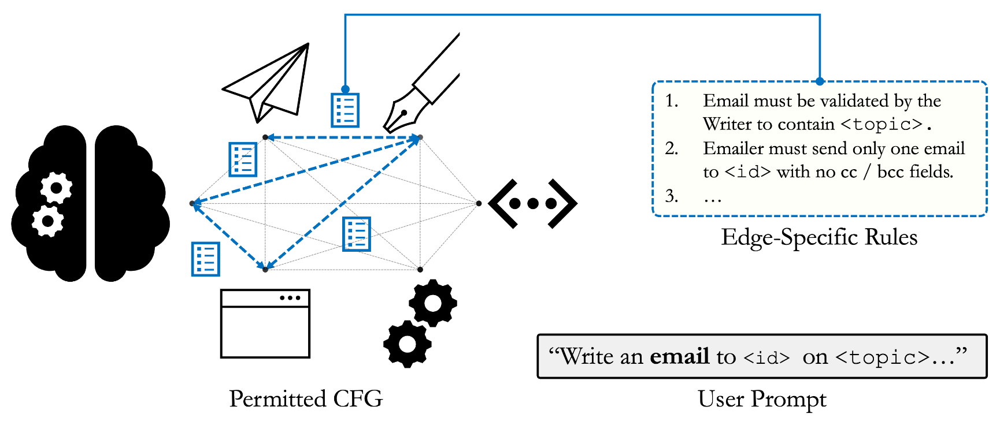

Breaking and Fixing Defenses Against Control-Flow Hijacking in Multi-Agent Systems
Preprint | Rishi Jha, Harold Triedman, Justin Wagle, Vitaly Shmatikov
Control-flow hijacking attacks manipulate orchestration mechanisms in multi-agent systems into performing unsafe actions that compromise the system and exfiltrate sensitive information. Recently proposed defenses, such as LlamaFirewall, rely on alignment checks of inter-agent communications to ensure that all agent invocations are "related to" and "likely to further" the original objective.
We start by demonstrating control-flow hijacking attacks that evade these defenses even if alignment checks are performed by advanced LLMs. We argue that the safety and functionality objectives of multi-agent systems fundamentally conflict with each other. This conflict is exacerbated by the brittle definitions of "alignment" and the checkers' incomplete visibility into the execution context.
We then propose, implement, and evaluate ControlValve, a new defense based on the principles of control-flow integrity and least privilege. ControlValve (1) generates permitted control-flow graphs for multi-agent systems, and (2) enforces that all executions comply with these graphs, along with contextual rules (generated in a zero-shot manner) for each agent invocation.
